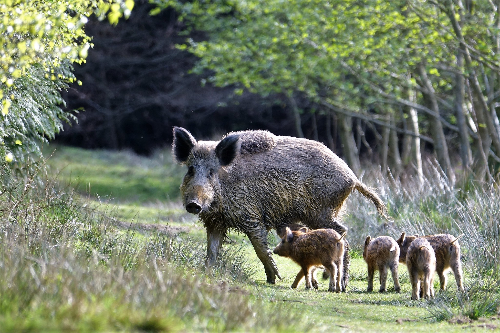

Prase divoké je původní druh sudokopytníka žijící v lesích Evropy, Asie a severní Afriky. Je známé svou inteligencí a přizpůsobivostí.

Zajímavosti
- Žije v tlupách vedených bachyní.
- Je všežravec – od kořínků po drobné obratlovce.
- Přemnožení způsobuje škody na polích a zahradách.
- Má výborný čich a rychlý běh.